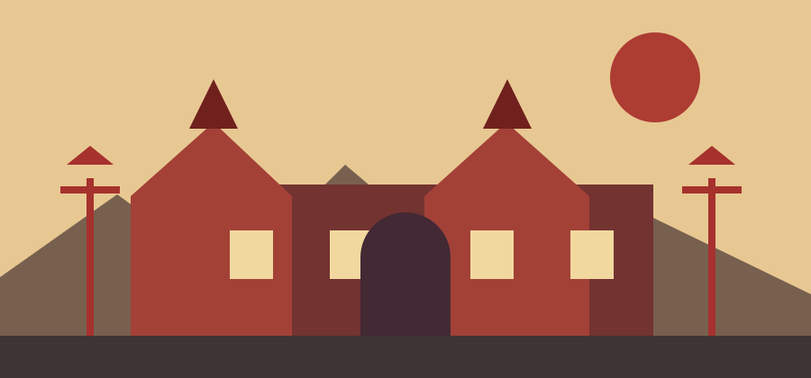
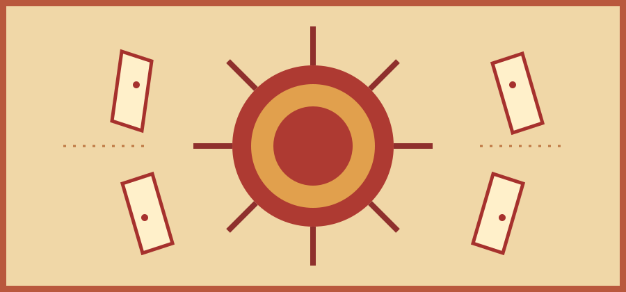

What — A Scarlet-Sky Adventure
Embodiment of Scarlet Devil is a vertically scrolling bullet-hell game in which the shrine maiden Reimu Hakurei or magician Marisa Kirisame investigates a strange scarlet mist covering Gensokyo.
Players weave through patterned volleys, collect power, and challenge a procession of memorable residents. EoSD is the sixth Touhou game and the first Windows-era entry in the series.
AI-art prompt: “Create an original, flat Japanese-inspired paper-cut illustration of a scarlet moon, layered mountain silhouettes, and a distant shrine gate in warm vermilion and parchment tones; no lettering.”
At a Glance
- Genre: vertically scrolling danmaku (bullet hell).
- Setting: Gensokyo, where humans and supernatural beings coexist.
- Goal: investigate the mist and survive the spell-card duels.
Who — Residents of the Scarlet Devil Mansion
The journey brings Reimu and Marisa into conflict with the people behind the mist. Each stage introduces a new opponent with a distinct personality, theme, and danmaku style.
The mansion's residents include its gatekeeper Hong Meiling, library-dwelling magician Patchouli Knowledge, and the maid Sakuya Izayoi. At the center is its young mistress, Remilia Scarlet, alongside her younger sister Flandre.

AI-art prompt: “Draw an original Japanese woodblock-inspired view of a grand red-roofed mansion at dusk, framed by two small paper lanterns; muted crimson, ink, and parchment palette; no characters or lettering.”
Three Sides of the Story
- Reimu follows the incident as the Hakurei Shrine maiden.
- Marisa investigates as a curious magician and playable rival.
- The mansion's residents turn each confrontation into a characterful duel.
When — A Good Time to Play
EoSD is a focused, level-based game, so a short practice session can be rewarding. Play when you can give the screen your attention and take a break whenever your concentration starts to fade.
A useful rhythm is to learn one stage at a time: first reach its boss, then study the attack patterns, and finally try to conserve lives and bombs for later stages.
AI-art prompt: “Make an original Japanese-inspired paper illustration of a crescent moon and a few stars above quiet indigo mountains, with a warm orange paper border; serene, simple shapes, no text.”
A Gentle Practice Schedule
- Warm up with a stage you already know.
- Practice one difficult section or spell card in focused bursts.
- Finish with a full run only when you feel ready, not on a timer.
Where — From the Hakurei Shrine to the Mansion
The game's journey moves through a stylized Gensokyo: a shrine, forest paths, a lake, and finally the Scarlet Devil Mansion. The scrolling stages turn each location into a backdrop for changing patterns and encounters.
At home, the best play spot is a comfortable setup with a clear view of the screen and enough room for precise controls. A quiet space also makes it easier to notice the rhythm of incoming bullets.
AI-art prompt: “Create an original flat Japanese folk-art scene of a vermilion torii gate on a mountain path leading to a tiny shrine, with parchment-colored sky and pine silhouettes; no lettering.”
Places Along the Route
- The Hakurei Shrine: Reimu's home and a starting point for incidents.
- Misty Lake: a broad, open stage watched over by the mansion's gatekeeper.
- Scarlet Devil Mansion: a maze-like home where the mystery reaches its source.
How — Read the Danmaku
Keep your eyes on the spaces between bullets instead of tracking a single projectile. Small, deliberate movements help you stay in safe lanes while leaving room to dodge the next wave.
Learn the basic tools: collect items, build shot power, and use a bomb when danger overwhelms you. EoSD offers different shot types for Reimu and Marisa, so experiment to find a style that feels natural.
AI-art prompt: “Illustrate an original abstract bullet-hell pattern as orderly circles and arcs of small colored beads around a clear central lane on warm washi paper; graphic, nonviolent, no text.”
Beginner's Toolkit
- Move carefully; you usually need less movement than you think.
- Watch the player character and nearby gaps, not every bullet at once.
- Use practice mode and bombs to learn patterns without frustration.
Why — The Charm of EoSD
EoSD pairs demanding pattern-dodging with a vivid cast and a soundtrack that gives every stage its own mood. Repeated attempts can feel like solving a small visual puzzle: recognize the pattern, find the opening, and make it through.
It is also a memorable entry point to Touhou's fan community and its many interpretations of Gensokyo. The game invites mastery, but its atmosphere and characters are just as much of the appeal.

AI-art prompt: “Design an original Japanese-inspired spell-card emblem with a vermilion sun, elegant radiating lines, and simple paper talismans on a washi background; decorative and entirely free of words.”
Reasons to Return
- Memorable stage themes and character themes.
- Distinct spell-card patterns that reward practice.
- A charming supernatural setting with room for discovery.